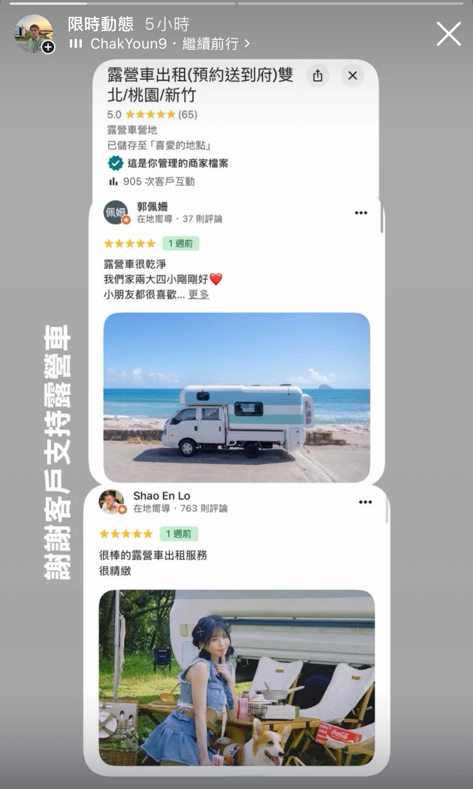

Google 地圖露營車五星評價截圖；同畫面含兩位客戶回饋
露營車出租・同組 1 張・組別 campervan-001

查看可搜尋的截圖文字
限時動態 5小時 I11 ChakYoun9•繼續前行〉 露營車出租（預約送到府）雙凸× 北/桃園/新竹 5.0 （65） 露營車營地 已儲存至「喜愛的地點」 這是你管理的商家檔案 il. 905 次客戶互動 佩姍 郭佩姍 在地嚮導•37 則評論 •• 1週前 小朋友都很喜歡⋯.更多 謝謝客戶支持露營車 在地嚮導．763 則評論 Shao En Lo 1週前 很棒的露營車出租服務 很精緻